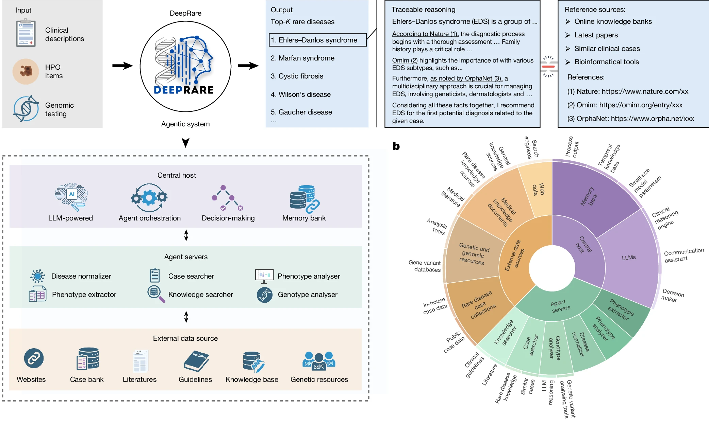
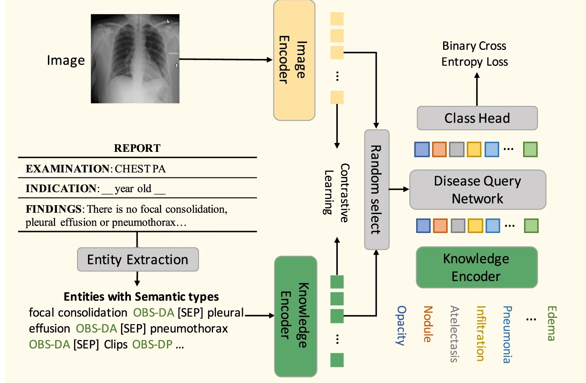
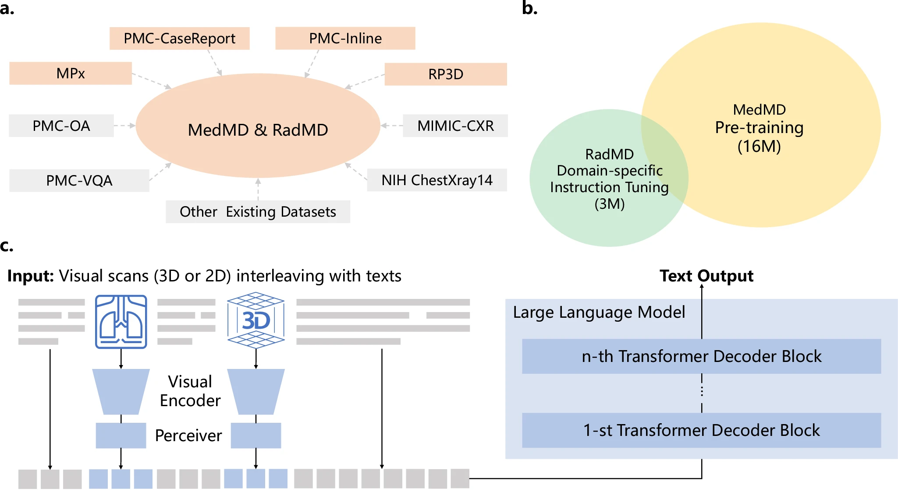
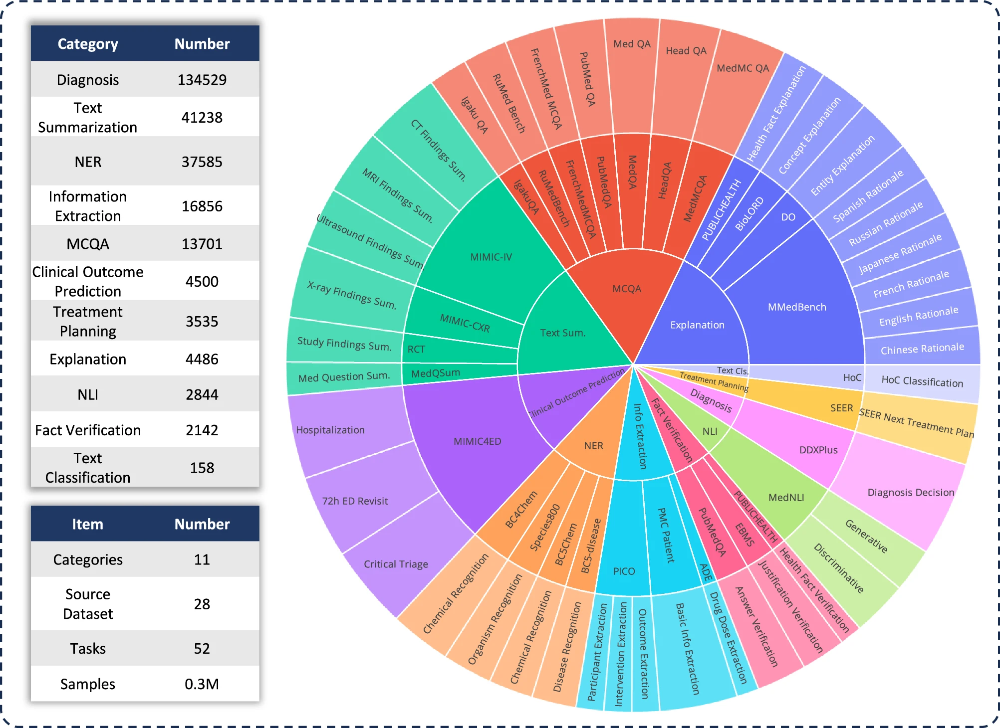
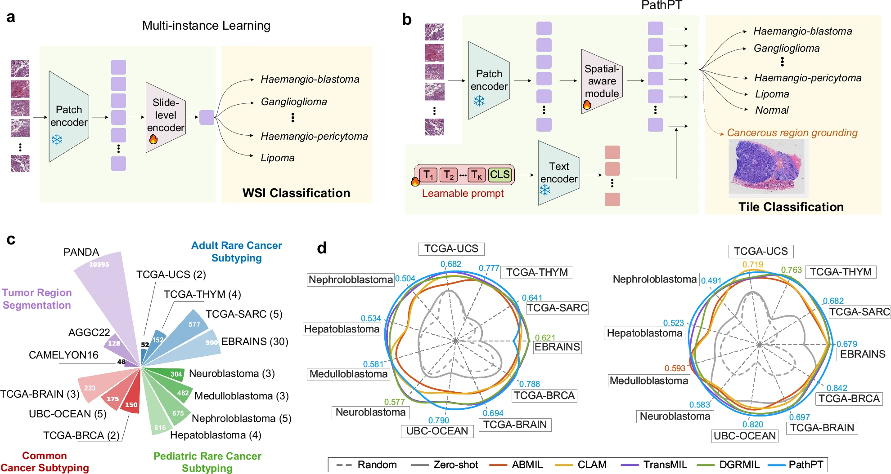

代表性 成果
基于系统范式孵化的顶级交叉应用，持续拓展全球生命科学研究的边界

DeepRare 罕见病循证推理诊断智能体
Nature研发了专用于罕见病辅助诊断的大语言模型（LLM）多智能体系统。采用启发自 MCP 的三层架构，系统无缝集成了 40 余项专业工具与权威医学知识库。通过处理非结构化病历、HPO 术语及多组学基因数据等多模态输入，DeepRare 借助自我反思机制进行推演，生成具备全域可溯源证据链的诊断假设。在涵盖 2,919 种罕见病、6,401 例临床病例的验证中，其多模态测试的 Recall@1 达到 69.1%（超越 Exomiser 的 55.9%），且 95.4% 的推理证据链通过了临床专家的一致性评估。
查看论文原文

KAD 知识增强医学视觉语言预训练
Nature Communications
针对现有医学视觉-语言预训练模型易受非结构化放射报告噪声干扰而产生语义漂移的问题，提出了知识增强的自动诊断框架（KAD）。该研究通过实体抽取技术，将自由文本形式的放射学报告转化为结构化的医学知识图谱（提取解剖部位、临床观测及状态）。通过将先验图谱知识注入视觉与文本的特征对齐过程，模型有效克服了文本噪声带来的偏差。KAD 在胸部 X 线的零样本疾病分类、医学视觉问答以及放射学报告生成等下游任务中，均展现出先进的泛化性能。
查看论文原文

RadFM 通用三维放射学基础模型
Nature Communications
针对现有深度学习模型在处理高维三维医学影像时面临的空间感知与算力壁垒，研发了 RadFM 放射学视觉通用基础模型。研究团队整合了包含千万量级的真实 2D 及 3D 多模态临床影像，并将其与高质量自然语言文本配对，构建了统一的无监督预训练架构。RadFM 有效解决了三维空间特征的表征学习与跨模态文本对齐问题，在少样本/零样本条件下的跨病种辅助诊断、自动三维病灶分割及复杂医学逻辑问答等多项下游核心任务中，展现出强大的迁移适配能力。
查看论文原文

跨专科通用医学计算语言模型
npj Digital Medicine针对现有大语言模型在处理多项选择题之外的复杂真实临床任务时表现受限的问题，研究团队构建了涵盖 11 项高级临床任务的综合评估基准 MedS-Bench，以及包含 500 万个实例、覆盖 122 项任务的大规模医学指令微调数据集 MedS-Ins。基于此研发的通用医学大模型 MMedIns-Llama 3，无需进行任务专属训练，即可在少样本或零样本条件下灵活适配不同临床场景。在涉及临床报告总结、治疗规划及医学命名实体识别等复杂任务的验证中，其泛化性能显著超越了现有的顶级闭源与开源基座模型。
查看论文原文

KEEP 知识增强病理学基础模型
Cancer Cell针对传统计算病理学视觉-语言模型缺乏明确医学知识融合的局限，创新研发了知识增强病理学基础模型（KEEP）。该架构系统整合包含上万种疾病及属性的综合疾病图谱，将数百万病理图文对重组为紧密对齐疾病本体层级的结构化语义组。通过在多级语义空间中深度对齐视觉特征与文本表征，使模型能够精准捕获复杂的病理形态模式与疾病关联。在多个公共基准与机构级罕见癌症数据集的验证中，KEEP 在亚型诊断、病灶检测与肿瘤分割任务中均展现出显著超越现有基础模型的泛化能力。
查看论文原文

PathPT 空间感知病理提示微调框架
Nature Communications针对罕见肿瘤病理数据稀缺与临床专家资源不足的挑战，创新提出了 PathPT 空间感知病理提示微调框架。该框架包含三大核心技术创新：1）采用空间感知视觉聚合模块，显式建模组织区域的长短程依赖关系以捕获复杂形态模式；2）引入任务自适应提示微调机制，以可学习的文本标记替代静态提示，精准对齐病理学语义；3）实现切片级弱监督向图块级指导的转化，利用病理基础模型的零样本能力将全切片标签转换为细粒度伪标签。在少样本罕见癌症亚型分类及癌变区域定位任务中展现出卓越的性能与泛化性。
查看论文原文
核心 团队
汇聚人工智能、结构生物与临床医学领域的顶尖头脑，共享同一个颠覆性愿景


为生命编程，向未知航行
我们长期招收立志于用 AI 颠覆传统科研边界的博士后、博士生与跨界研究者。
如果您渴望站在人类认知的前沿，打造驱动未来十年的生命科学计算基座，CAB 中心将是您的终极平台 。